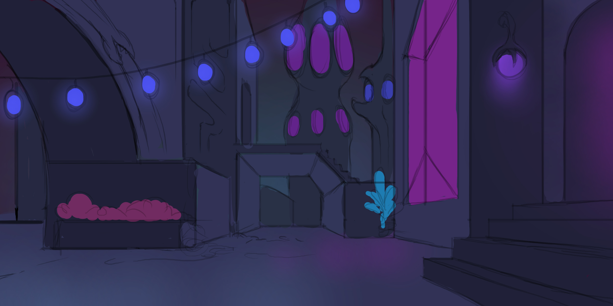
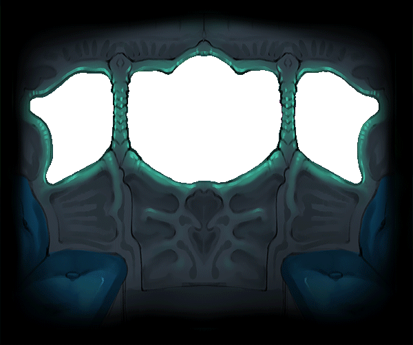

/*We have our frame, that says 'don't display stuff bigger than me'*/
/*Our main background picture, we can swap this out for any other by changing the URL <3*/

/*The copy to make the scroll look seamless!*/
/*And the bouncing carriage animation on the top.*/
